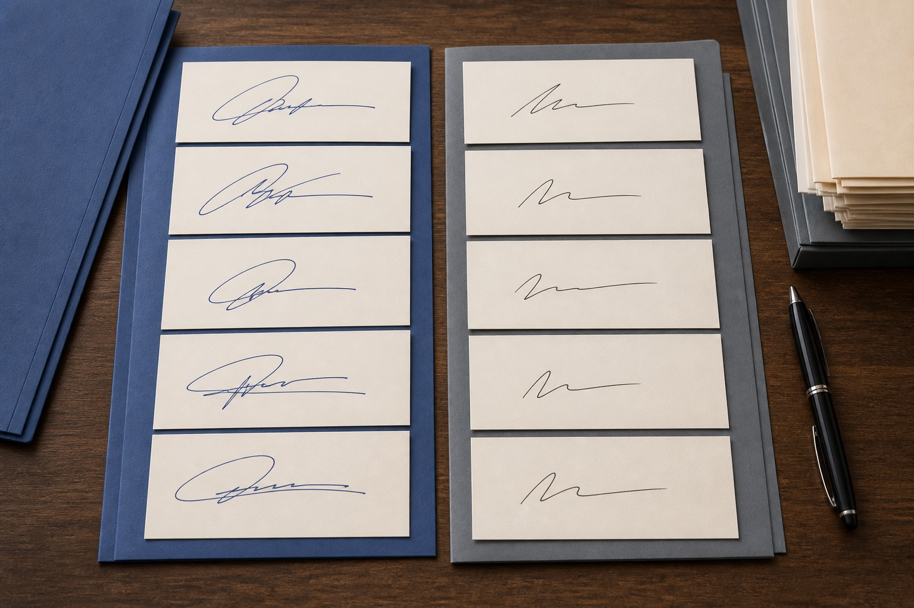

苏州正式落款和快速签字，为什么会出现不同写法？
书写时间和使用场景会影响落款长度、连笔和收笔。苏州站从模仿签名与模仿签字样本出发，补充模仿笔迹和笔迹鉴定中的比较重点。

先按书写场景整理页面
苏州站收到的材料常常同时包含正文、签字页和零散批注。模仿笔迹主要看连续文字中的字形、字距和行距；模仿签名与模仿签字多出现在固定落款或短文字中。将它们混在同一组里，比较时容易把场景造成的变化当成字迹本身的变化。
整理时可以先按文件名称、形成时间和使用场景建立文件夹，再在每个文件夹内保留完整页面。完整页能够说明纸张、版面和文字之间的关系，局部图用来补充起笔、转折和收笔细节。
图片清楚，还要保留来源和版本
正式落款与快速签字的书写差异时，文件名不要只写“图片1”或“签字”。建议加入日期、材料类别和页码，原始照片、扫描件和压缩后的沟通图分别保存。照片经过裁剪或锐化后，线条粗细和颜色都可能改变，不能和原始文件混为一谈。
对笔迹鉴定材料来说，来源、时间和载体与画面细节同样重要。某一页来自复印件，某一页来自手机照片，都应在清单中写清楚。发现页码缺失或版本不明时先标注待核对，不要根据页面内容自行补写。
比较时看连续特征，不只挑一个字
相同的字偶尔写得相似，并不能单独说明整份材料的关系。比较模仿笔迹时，还要看相同结构在不同位置的表现、行尾如何收拢、段落留白是否稳定；比较模仿签名和模仿签字时，则要注意连笔路线、字间连接和正式与快速场景之间的差异。
笔迹鉴定需要把多个特征放在同一组材料里观察，并结合纸张、工具、角度和清晰度判断。城市站文章提供的是资料准备和阅读参考，真正使用材料时应保留完整原件和形成背景，避免只依据一张缩略图下结论。
提交前的四项检查
- 页面方向端正，完整页和局部图可以相互对应。
- 文件名包含日期、类别和页码，新增版本不覆盖旧文件。
- 模仿笔迹、模仿签名、模仿签字与笔迹鉴定材料分组清楚。
- 原件、扫描件、复印件和手机照片的来源已经备注。